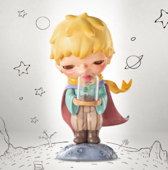

🎈
💖
🌈
✨
💫
Hirono 🌸

I really love Hirono because Hirono is a beloved character created by the Chinese artist Lang, known for its deep emotional resonance and unique artistic style. People are drawn to Hirono because it embodies a wide range of human emotions—love, joy, sadness, fear, and more—making it highly relatable. The character's design and storytelling reflect themes of self-discovery and personal growth, which many collectors and fans find meaningful.